MOD 1
# Better Sound
Agar Sound Minecraft jadi lebih realistis
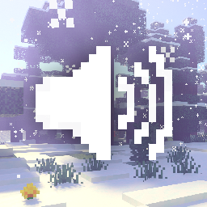
[DETAIL MOD]
File Size=7.79MB
MOD mediafire
MOD 2
True-Java-Saturation
Mempercepat efek heal saat makan
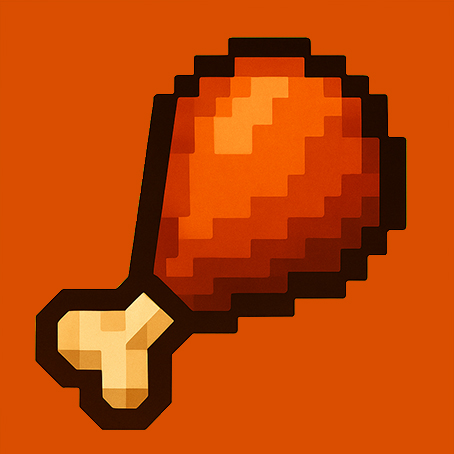
[DETAIL MOD]
File Size=841.85KB
MOD curseforge
MOD 3
Night Vision
Penglihatan terang saat gelap
[DETAIL MOD]
File Size=35.47KB
MOD curseforge
MOD 4
Off Hand
Bisa pegang item di tangan kiri
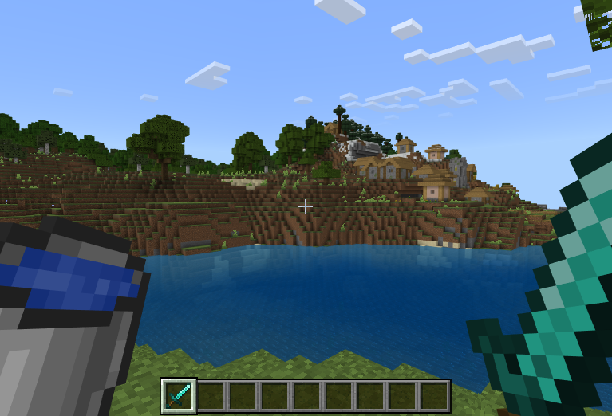
[DETAIL MOD]
File Size=464KB
MOD mediafire
MOD 5
Sweep and Slash
Mekanik attack seperti Java
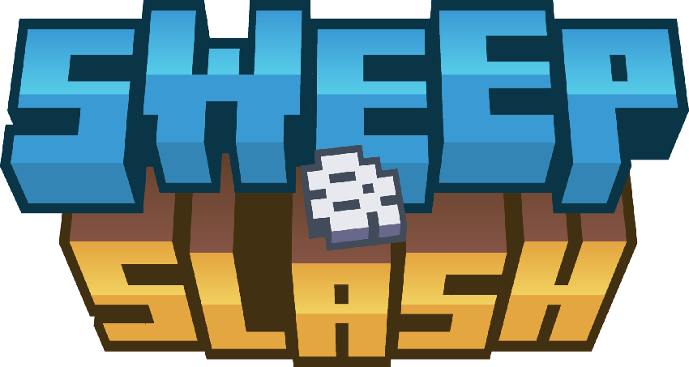
[DETAIL MOD]
File Size=181.73KB
MOD mcpedl
MOD 6
Ruins Structure
Menambah structure ke dunia
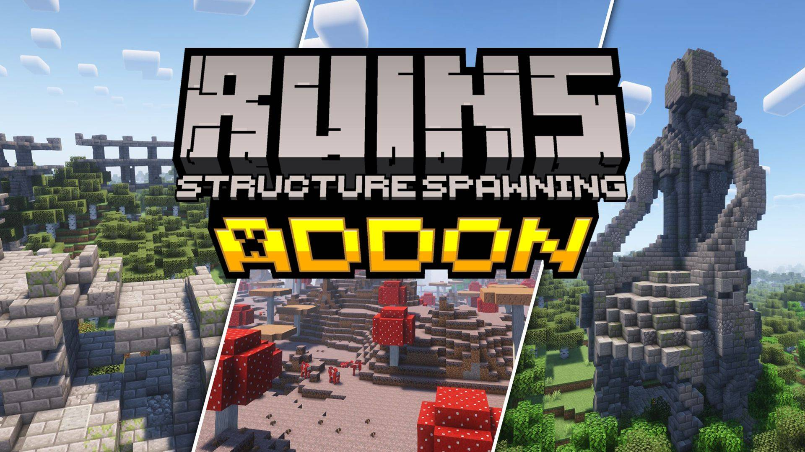
[DETAIL MOD]
File Size=881.21KB
MOD curseforge
MOD 7
#[Realistic Random Loot]
Menambahkan Loot Unik Dari Item yang Berceceran Di Tanah
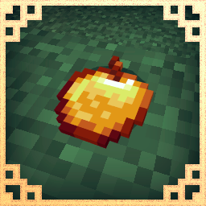
[DETAIL MOD]
File Size=191.84KB
MOD curseforge
MOD 8
#[Villager Golem Healer Add-on]
Menambahkan villager yang bisa di trade dan bisa membuat golem sembuh dari kerusakan
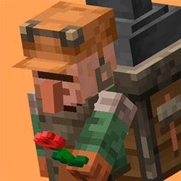
[DETAIL MOD]
File Size=182.75KB
MOD curseforge
MOD 9
#[Way Stone]
Menambahkan Item Untuk teleport
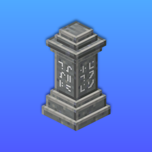
[DETAIL MOD]
File Size=59.74KB
MOD curseforge
MOD 10
#[Overstack]
Membuat Limit Stack Block Yang Awal Nya 64 Bisa Jadi 1000
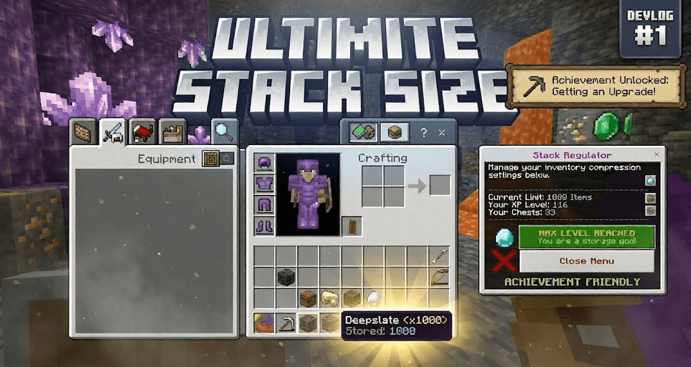
[DETAIL MOD]
File Size=16.66KB
MOD curseforge
MOD 11
#[First-Person Model]
Pov Player Bisa Melihat Badan Bawah
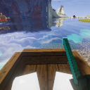
[DETAIL MOD]
File Size=1.51MB
MOD curseforge
MOD 12
#[Core-Craft]
Menambah petualangan baru seperti boss fight dan structure baru
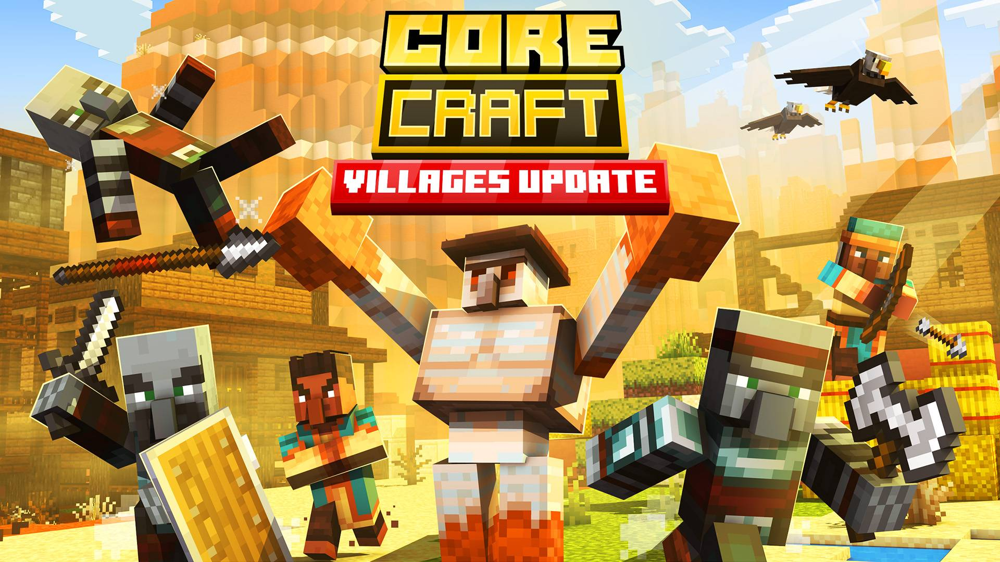
[DETAIL MOD]
File Size=24.5MB
MOD curseforge
MOD 13
#[durability-armor-viewer]
Memperlihatkan kerusakan pada armor
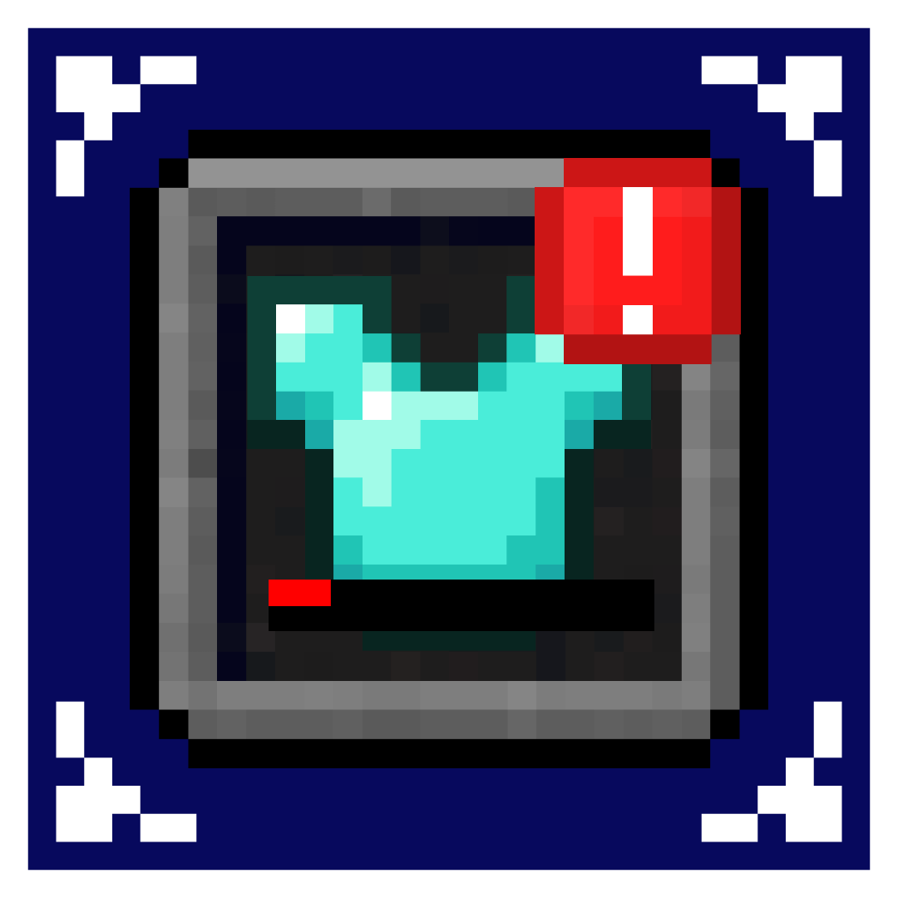
[DETAIL MOD]
File Size=152.8KB
MOD mediafire
MOD 14
#[system-dynamic-lights]
agar bisa off hand torch dan menyala di kegelapan malam
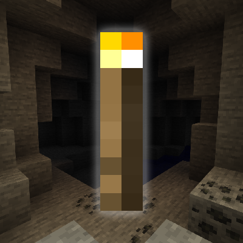
[DETAIL MOD]
File Size=114.4KB
MOD curseforge
Rekomen Buat Survival Sudah Di Uji 100℅ Work
MOD 15
#[better-adventures-plus]
Modpack ini meningkatkan pengalaman vanilla dengan 200+ mod yang menambahkan kualitas hidup (QoL), visual, suasana, dan struktur baru tanpa mengubah inti permainan terlalu drastis.
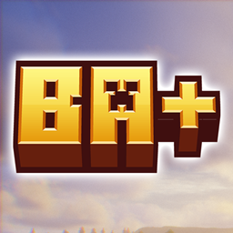
[DETAIL MOD]
File Size=153.5MB
MOD curseforge
MOD 16
#[XNOVA VIEW MODEL V3 TRANSLATE BY MASKSUMAIRU]
Membuat tangan jadi lebih kedepan seperti screen shot di bawah
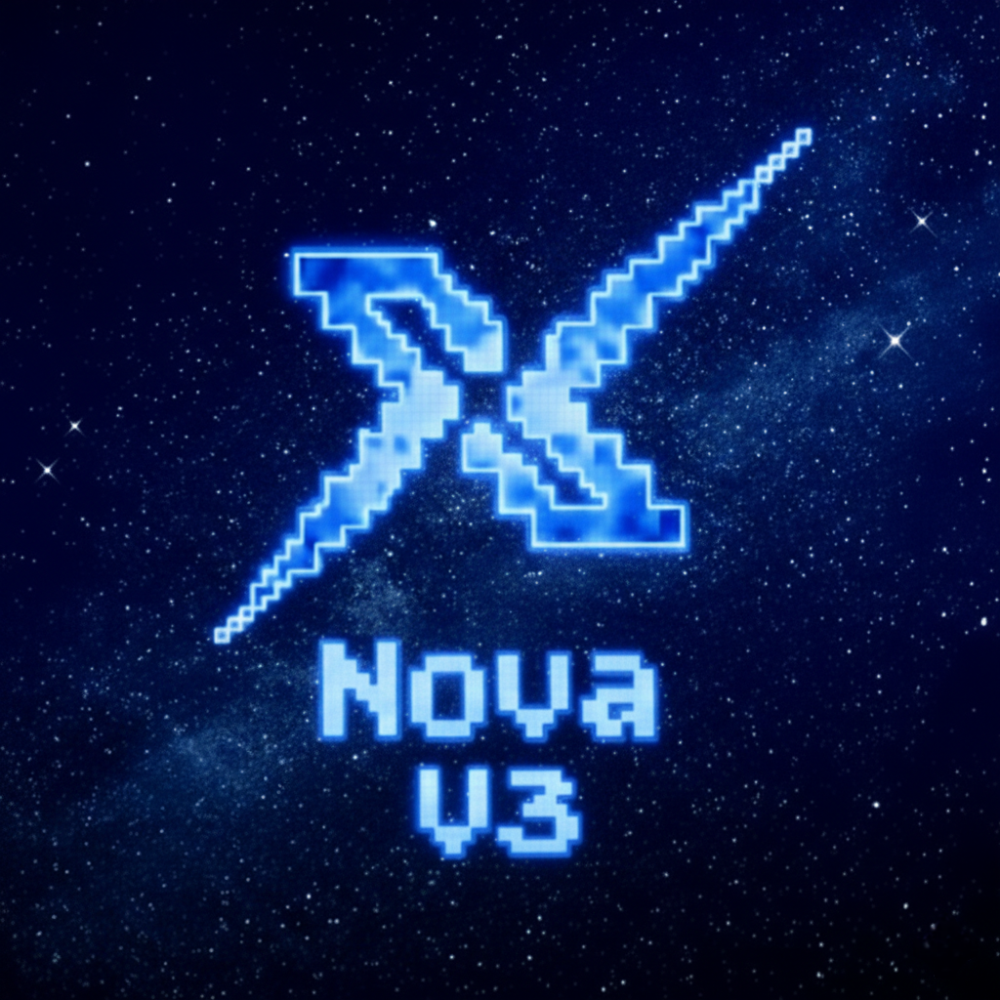
[DETAIL MOD]
File Size=6.28MB
MOD mediafire